| Variable | N | Mean | Std. Dev. | Min | Pctl. 25 | Pctl. 50 | Pctl. 75 | Max |
|---|---|---|---|---|---|---|---|---|
| Area | 30 | 447 | 156 | 182 | 321 | 441 | 553 | 756 |
| Frente | 25 | 15 | 3.6 | 7.6 | 12 | 15 | 17 | 23 |
| Incl | 20 | 4 | 3 | 0.66 | 2.2 | 2.9 | 4.7 | 12 |
| PU | 30 | 2499 | 246 | 2038 | 2336 | 2463 | 2664 | 2900 |
Curso de Fatores
Paradoxo de Simpson e Imputação de Dados
Luiz Droubi
Academia da Engenharia de Avaliações
23 de julho de 2025
Estudo de Caso
Dados
- Numa amostra de dados de mercado obtivemos:
- 30 dados de terrenos de variadas características
- Algumas variáveis foram coletadas de forma incompleta, como a variável
Frentee a variávelIncl(inclinação da superfície do terreno).
Dados
- Nota-se que existem apenas 25 dados com a variável
Frente. - E que existem apenas 20 dados com a variável
Incl.
Modelo de Regressão Múltipla
Apenas casos completos
IC (80%)
|
||||||
|---|---|---|---|---|---|---|
| Termo | Est. | Erro | Est. t | p-valor | Inf. | Sup. |
| (Intercept) | 8,77 | 0,39 | 22,27 | 0,00 | 8,23 | 9,30 |
| log(Area) | -0,22 | 0,13 | -1,70 | 0,12 | -0,40 | -0,04 |
| log(Frente) | 0,18 | 0,17 | 1,07 | 0,31 | -0,05 | 0,42 |
| log(Incl) | -0,08 | 0,02 | -3,37 | 0,01 | -0,11 | -0,05 |
| a Dados: 15 | ||||||
| b R2: 0,57 | ||||||
| c R2aj: 0,45 | ||||||
Variável
Frentenão se mostrou significante!Por contar com apenas 15 dados completos, a estimação ficou prejudicada!
Análise exploratória
Variável Área
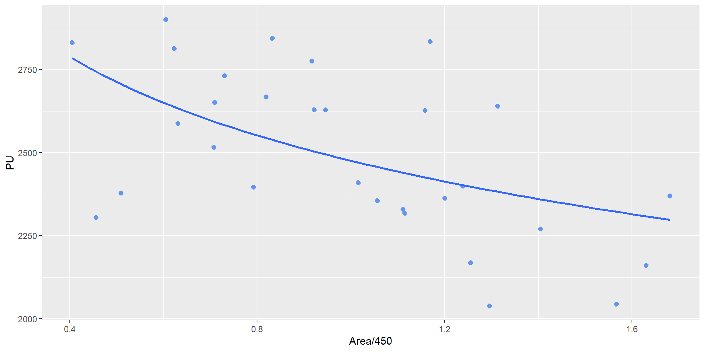Variável Frente
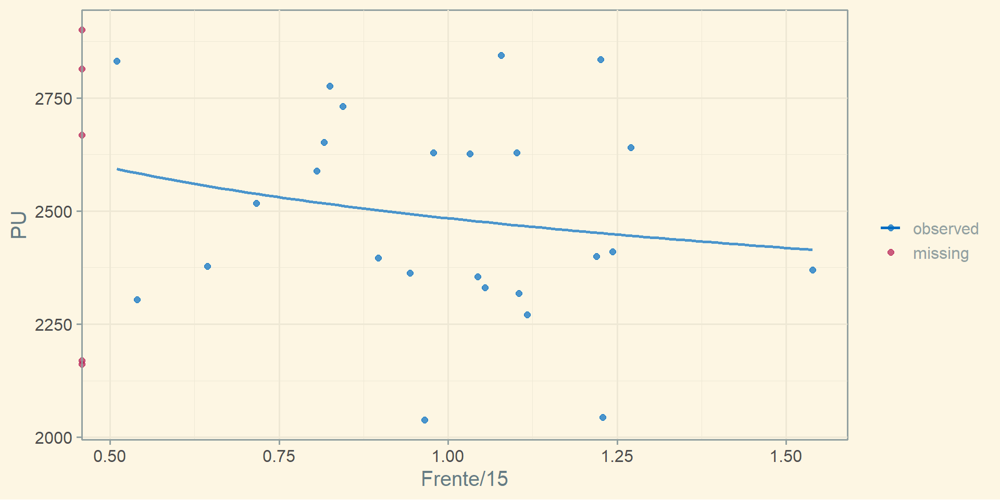Variável Inclinação
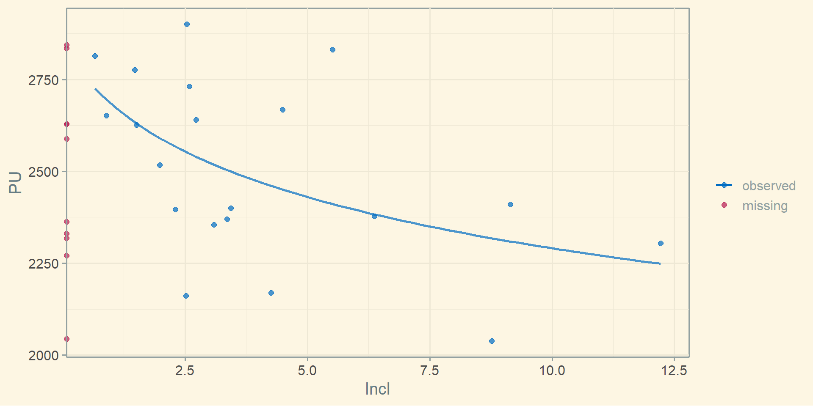Derivação de Fatores
Fator Área
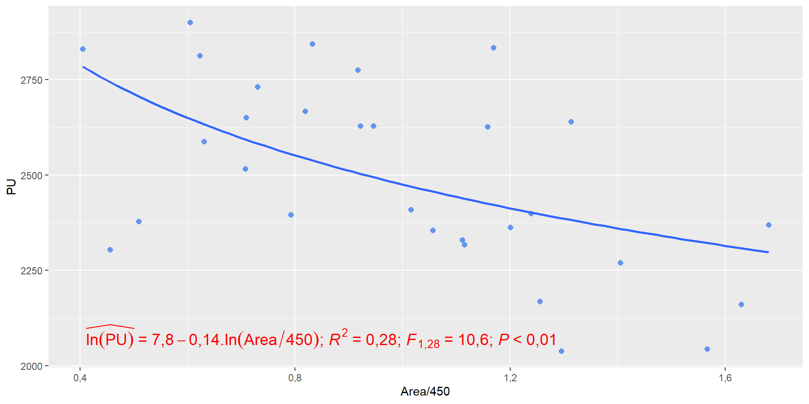Dado que a área tem correlação com a variável PU, na forma log-log, pode-se assim ajustar um fator área:
\[F_a = \left ( \frac{A_{imovel}}{A_{paradigma}} \right)^{-0,15} = \left ( \frac{A_{paradigma}}{A_{imovel}} \right)^{0,15} = \left ( \frac{450}{A_{imovel}} \right)^{0,15}\]
Fator Área (2)
IC (80%)
|
||||||
|---|---|---|---|---|---|---|
| Termo | Est. | Erro | Est. t | p-valor | Inf. | Sup. |
| (Intercept) | 7,81 | 0,02 | 486,11 | 0 | 7,79 | 7,83 |
| log(Area/450) | -0,14 | 0,04 | -3,26 | 0 | -0,20 | -0,08 |
- De acordo com o modelo acima, um imóvel paradigma (
Area= 450m2), tem VM de:
Já para um imóvel de 750m2, tem-se: \(F_{Area} = (450/750)^{0,15} = 0,926\)
Para avaliar o valor de mercado do lote de 750 m2: \(E[PU|A=750] = 0,926.2.465=2282,60 \text{ R\$/m}^2\)
Fator Frente
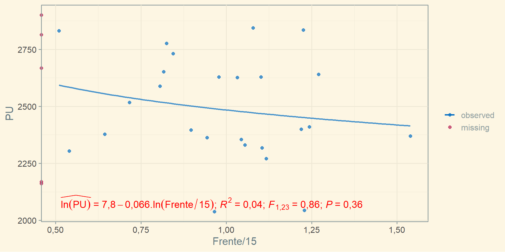Dado que não há evidência forte da correlação entre as variáveis
PUeFrente, pode-se concluir que a variávelFrentenão é estatisticamente significante e, portanto, não é necessário o ajuste de um fator frente!Além do mais, um fator frente assim ajustado seria contraditório: quanto maior a frente, menores os preços unitários!
Fator inclinação
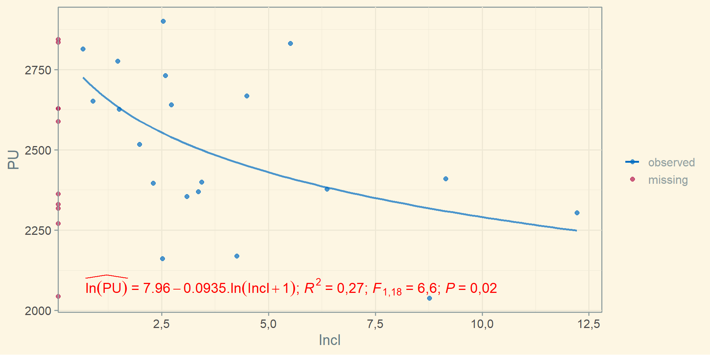Para a variável
Incl, assim como paraArea, há evidência de um efeito sobrePU.Pode-se, assim, ajustar um fator inclinação:
\(F_i = \left (\frac{i_{imovel} + 1}{i_{paradigma} + 1} \right )^{-0,10} = \left (\frac{i_{paradigma} + 1}{i_{imovel} + 1} \right )^{0,10} = \left (\frac{1}{i_{imovel} + 1} \right )^{0,10}\)
Fator inclinação (2)
IC (80%)
|
||||||
|---|---|---|---|---|---|---|
| Termo | Est. | Erro | Est. t | p-valor | Inf. | Sup. |
| (Intercept) | 7.96 | 0.06 | 141.07 | 0.00 | 7.88 | 8.03 |
| log1p(Incl) | -0.09 | 0.04 | -2.58 | 0.02 | -0.14 | -0.05 |
- Para o lote paradigma (plano): \(F_i = \left( \frac{1}{0+1}\right)^{0,10}=1,0\)
- Para um lote com inclinação igual a 5%: \(F_i = \left( \frac{1}{5+1}\right)^{0,10}=0,84\)
- O fator também deverá ser aplicado de forma multiplicativa!
- Se o lote paradigma (plano) possui valor igual a R$ 2.859,65/m2.
- Então um lote com inclinação de 5% possui VM igual a R$ 2.402,10/m2.
Reflexões
No modelo de regressão linear múltipla, com menos dados disponíveis, o efeito da variável
Frenteera positivo, porém estatisticamente insignificante.No modelo de regressão simples, com mais dados, o efeito da variável
Frentetambém se mostrou insignificante, porém negativo.Qual o efeito real da variável
Frente?
Efeito “real” da variável Frente
- Análise da variável
Frenteapós a homogeneização com o fatorArea:
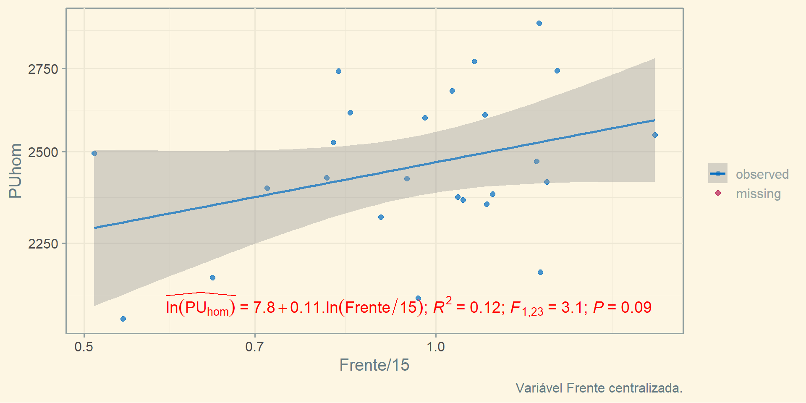
Efeito “real” da variável Área
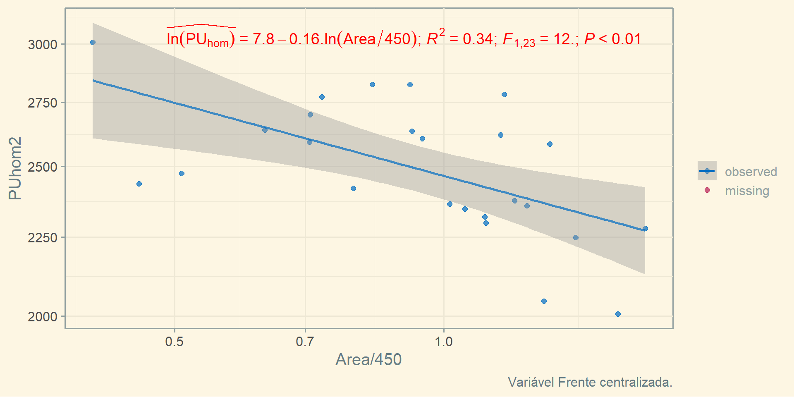- \(R^2\) passou de 0,28 para 0,34! Coeficiente passou de -0,14 para -0,16!
Correlação Total, Parcial e Semiparcial
Modelo com regressores Area e Frente
IC (80%)
|
||||||
|---|---|---|---|---|---|---|
| Termo | Est. | Erro | Est. t | p-valor | Inf. | Sup. |
| (Intercept) | 7,81 | 0,02 | 484,15 | 0,00 | 7,79 | 7,83 |
| log(Area/450) | -0,33 | 0,11 | -3,09 | 0,01 | -0,47 | -0,19 |
| log(Frente/15) | 0,36 | 0,15 | 2,39 | 0,03 | 0,16 | 0,55 |
| a Dados: 25 | ||||||
| b R2: 0,33 | ||||||
| c R2aj: 0,27 | ||||||
A retirada de
Inclmelhora a estimação dos outros coeficientes (mais dados)!A variável
Frente, agora, demonstrou-se significante e com efeito positivo.O coeficiente de determinação diminui bastante com a retirada da variável
Incl.
Correlação de Ordem-Zero, Parcial e Semiparcial
Existem basicamente três tipos de correlação entre variáveis:
- A de Pearson (ordem-zero), quando analisadas isoladamente.
- A Parcial, computada enquanto se retira(m) o(s) efeito(s) de outra(s) variável(eis).
- A semi-parcial, que expressa a relação única entre uma variável independente e a variável dependente.
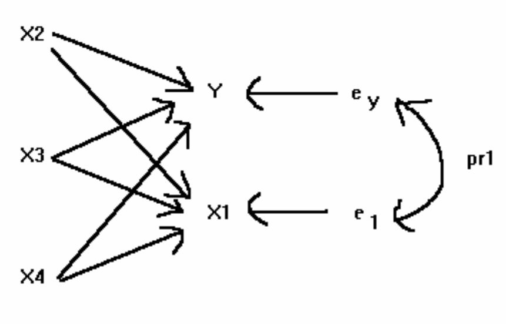
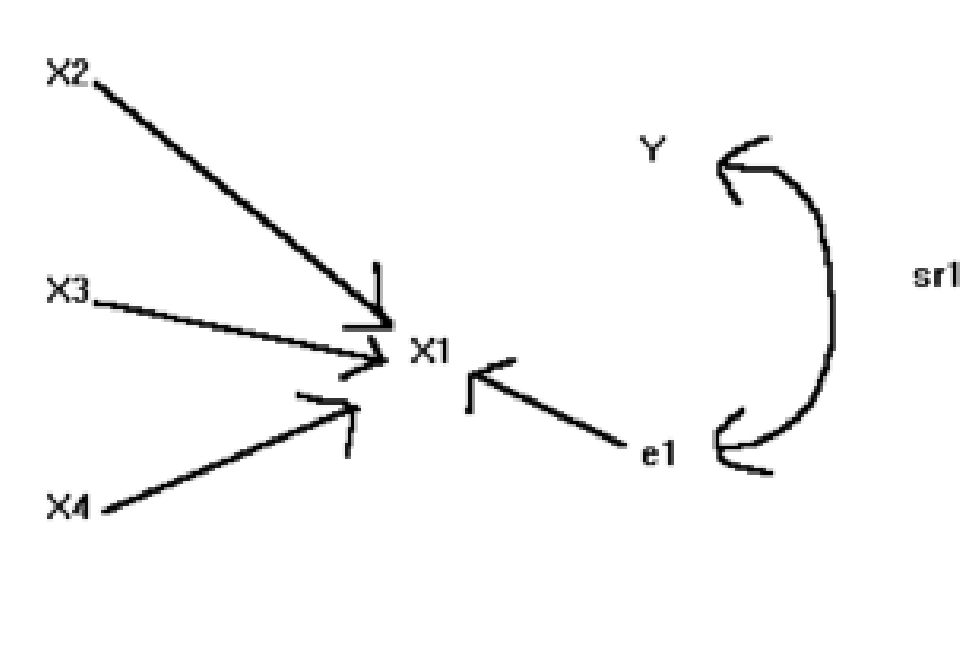
Correlação de Ordem Zero, Parcial e Semi-Parcial (2)
| Zero-order | Partial | Part | |
|---|---|---|---|
| log(Area/450) | -0,39 | -0,55 | -0,54 |
| log(Frente/15) | -0,19 | 0,45 | 0,42 |
Na tabela acima são vistas a correlação de ordem zero, a parcial e a semi-parcial (coluna Part).
O valor da correlação semi-parcial elevado ao quadrado é também conhecido como coeficiente de determinação parcial!
Por exemplo, para a variável
Frente: \(sr_{Frente}^2 = 0,42^2 \approx 0,18\).Já para a variável
Area: \(sr_{Area}^2 = -0,54^2 \approx 0,29\)
O coeficiente de determinação parcial de uma variável representa o percentual de explicação que ela adiciona ao modelo!
- Por exemplo, a regressão simples da variável
Frentevs.PUtinha \(R^2 = 0,04\). - Adicionando a variável
Areaa este modelo, ele ficou com \(R^2 = 0,33\)!
- Por exemplo, a regressão simples da variável
Correlação de Ordem Zero, Parcial e Semi-Parcial (3)
| Zero-order | Partial | Part | |
|---|---|---|---|
| log(Area/450) | -0,39 | -0,55 | -0,54 |
| log(Frente/15) | -0,19 | 0,45 | 0,42 |
- A correlação da variável
Areacom relação à PU era fraca (\(r = -0,39\))- Porém, após a consideração da variável
Frente, essa correlação torna-se moderada (\(pr = -0,55\))!
- Porém, após a consideração da variável
- O mais importante, porém, é perceber que o sinal do coeficiente de correlação parcial muda para a variável
Frente!- A correlação da variável
Frentecom relação àPUera fraca e negativa (\(r = -0,19\)) - Porém, na presença da variável
Area, a correlação deFrenteePUpassa a ser positiva e moderada (\(pr = 0,45\))!
- A correlação da variável
- Este efeito, de mudança no sinal da correlação após a consideração de um outro regressor, é denominado de Paradoxo de Simpson!
Paradoxo de Simpson
Correlação entre Área e Frente
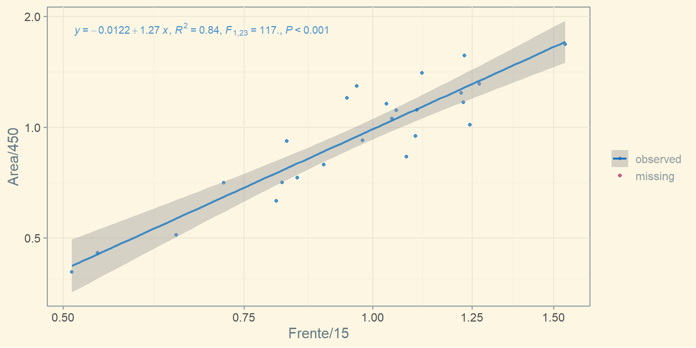- Existe uma forte correlação entre os regressores!
Paradoxo de Simpson
\(\ln(PU) = \beta_0 + \beta_1.\ln(Area/450) + \beta_2.\ln(Frente/15) + \varepsilon_1\)
\(\ln(Area) = \beta_3 + \beta_4.\ln(Frente/15) + \varepsilon_2\)
\(\ln(PU) = \beta_0 + \beta_1\beta_3 + (\beta_1\beta_4 + \beta_2).\ln(Frente/15) + \varepsilon\)
\(\ln(PU) = 7,81 - 0,33.\ln(Area/450) + 0,36\ln(Frente/15) + \varepsilon_1\)
\(\ln(Area/450) = -0,01 + 1,27.\ln(Frente) + \varepsilon_2\)
\(\hat{\ln(PU)} = 7,81 + (-0,33.1,27 + 0,36).\ln(Frente/15)\)
\(\hat{\ln(PU)} = 7,81 - 0,06.\ln(Frente/15)\)
É por isso que a regressão simples com cada regressor não é, em geral, relevante para o ajuste de fatores de homogeneização!
Paradoxo de Simpson (2)
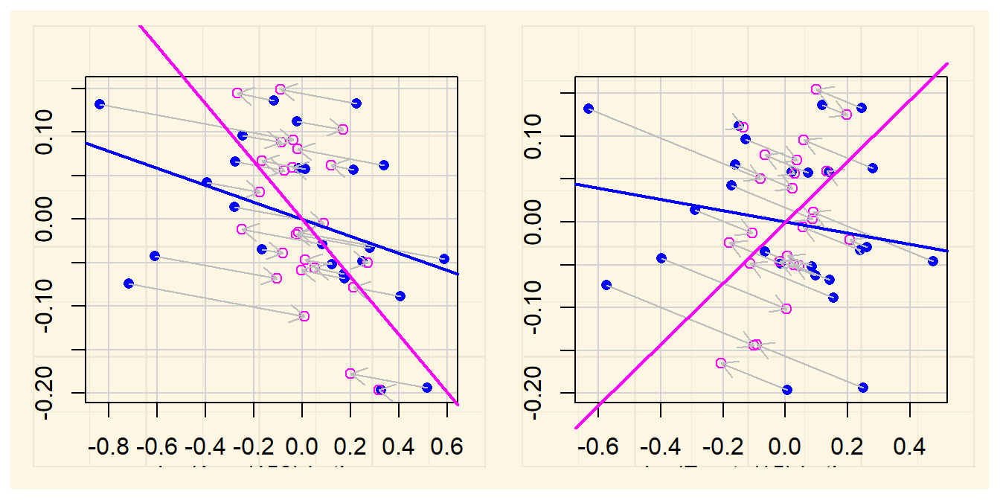Gráficos Marginais/Condicionais
- Nos modelos de regressão linear múltipla, o efeito de uma variável é computado após a “homogeneização” da outra!
Resíduos Parciais
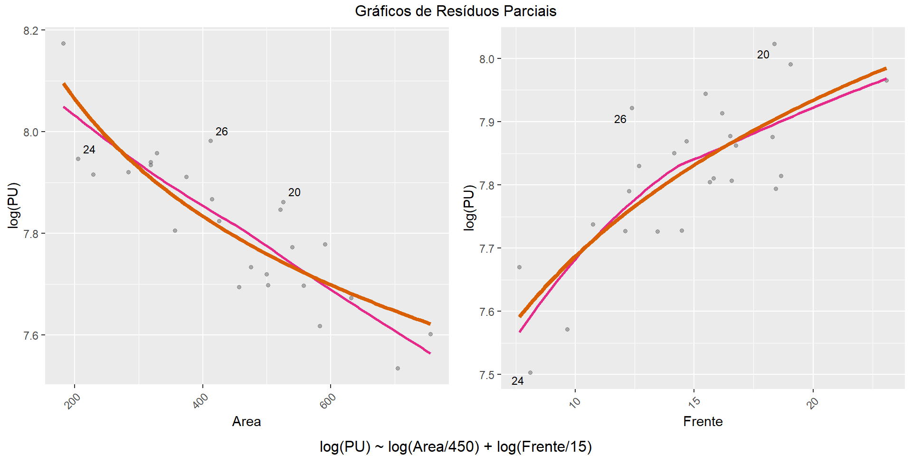Derivação de Fatores a partir da RLM
IC (80%)
|
||||||
|---|---|---|---|---|---|---|
| Termo | Est. | Erro | Est. t | p-valor | Inf. | Sup. |
| (Intercept) | 7,81 | 0,02 | 484,15 | 0,00 | 7,79 | 7,83 |
| log(Area/450) | -0,33 | 0,11 | -3,09 | 0,01 | -0,47 | -0,19 |
| log(Frente/15) | 0,36 | 0,15 | 2,39 | 0,03 | 0,16 | 0,55 |
Os fatores derivados devem ser utilizados na forma multiplicativa!
- A equação de estimação será: \(PU = 2.465,00.F_{Area}.F_{Frente}\)
O fator Área seria: \(F_{Area} = \left ( \frac{450}{A_{imovel}} \right)^{0,33}\)
O fator Frente seria: \(F_{Frente} = \left ( \frac{F_{imovel}}{15} \right)^{0,36}\)
Aplicação do Fator Incl
Como vimos, é possível ajustarmos bons modelos com a remoção de uma variável que conta com muitos valores faltantes, como a variável
Incl.No entanto, se a sua remoção do modelo melhora a estimação, por outro lado, o efeito desta variável não pode ser simplesmente ignorado!
Uma alternativa é derivar o fator
Incla partir de uma regressão simples:Por exemplo, imagine a avaliação de um lote com
Area= 750m,Frente= 25m, porém com 10% de inclinação.- Pode-se aplicar o fator
Incl: \(F_i = \left (\frac{1}{i_{imovel} + 1} \right )^{0,10}\) - Assim, o valor de mercado de um lote com
Area= 750m,Frente= 25m eIncligual a 10% é igual a: - \(PU = 2.465,00.\left ( \frac{450}{A_{imovel}} \right)^{0,33}.\left ( \frac{F_{imovel}}{15} \right)^{0,36}.\left (\frac{1}{i_{imovel} + 1} \right )^{0,10}\)
- \(PU = 2.465,00.\left ( \frac{450}{750} \right)^{0,33}.\left ( \frac{25}{15} \right)^{0,36}.\left (\frac{1}{10 + 1} \right )^{0,10} \approx\)R$ 1.973,66
- Pode-se aplicar o fator
Reflexões
Análise Exploratória
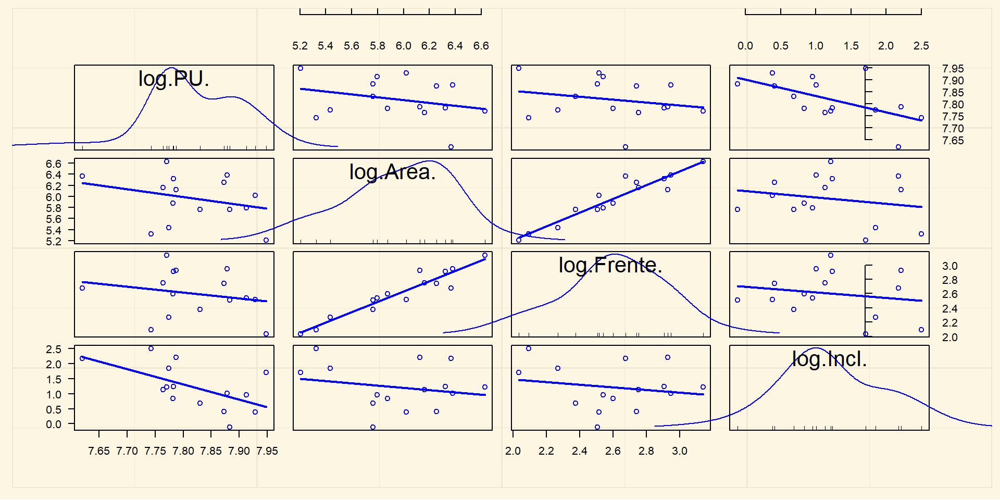Relação de Inclinação com outros regressores
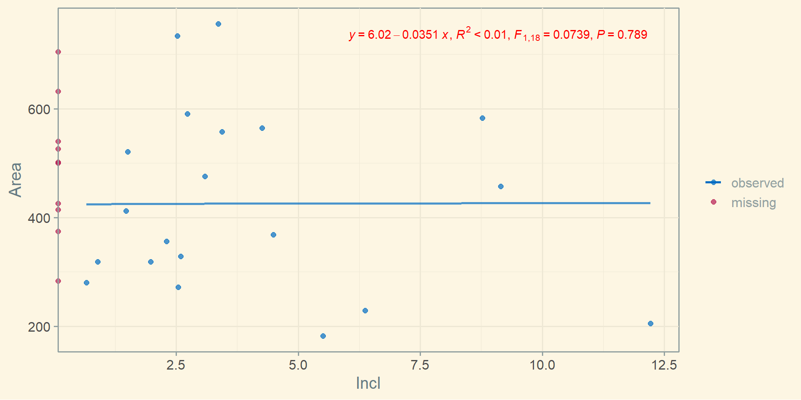
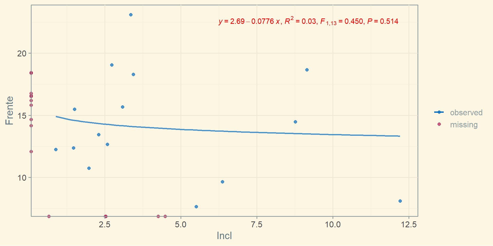
- Não há, na prática, qualquer relação entre
Incle as variáveisFrenteeArea.- Isto permite que o fator
Incl, derivado a partir de uma regressão simples, seja utilizado sem qualquer preocupação a respeito de viés de variável omitida.
- Isto permite que o fator
Reflexões
No mercado imobilário existem diversas, inúmeras variáveis explicativas
Muitas delas estão correlacionadas entre si, a exemplo das variáveis
AreaeFrente- Quando as variáveis explicativas estão correlacionadas, não se pode ignorar o efeito da presença/ausência de uma sobre a outra na modelagem
Outras variáveis não estão necessariamente correlacionadas com as outras. É o exemplo da variável
Incl. Podemos também citar a variávelAndar, em apartamentos, ou a posição no andar- Quando as variáveis não estão potencialmente correlacionadas com as outras variáveis do modelo, faz sentido a derivação de um fator de maneira isolada.
- Quando a variável em análise estiver potencialmente correlacionada apenas com algumas das variáveis, pode ser necessário um modelo de regressão múltipla auxiliar com o objetivo de estimar, sem viés, o seu coeficiente.
Aparte: Imputação de dados
Aparte: imputação de dados
- Existem algoritmos de imputação de múltipla de dados, como o PMM (rubin1986?), que permitem a imputação de dados faltantes mesmo na presença de não-linearidade ou heteroscedasticidade.
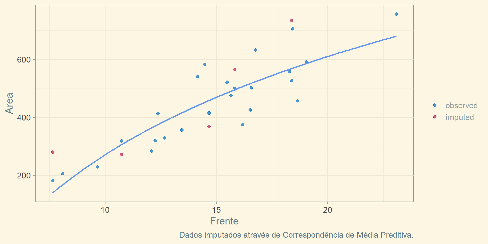
Aparte: imputação de dados (2)
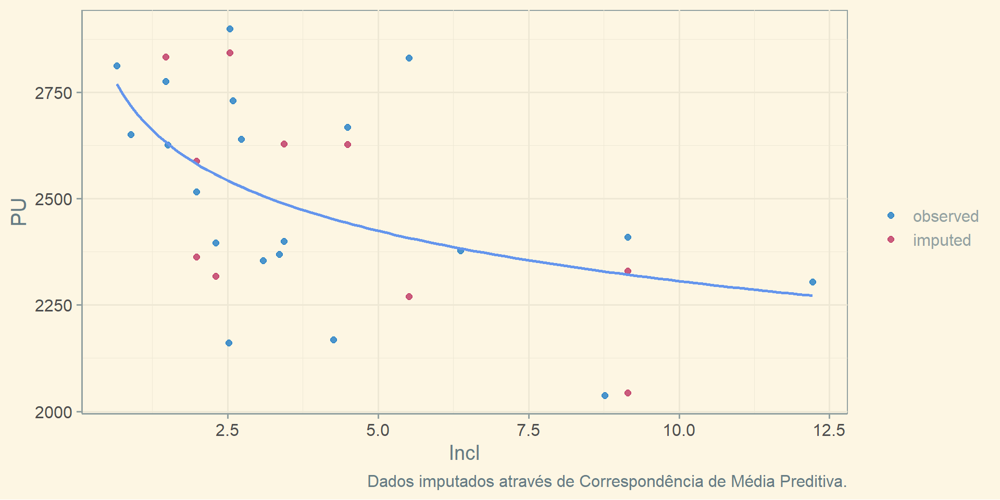Aparte: imputação de dados (3)
Modelo com dados imputados
IC (80%)
|
||||||
|---|---|---|---|---|---|---|
| Termo | Est. | Erro | Est. t | p-valor | Inf. | Sup. |
| (Intercept) | 7,97 | 0,03 | 240,54 | 0,00 | 7,93 | 8,02 |
| log(Area/450) | -0,31 | 0,07 | -4,69 | 0,00 | -0,40 | -0,23 |
| log(Frente/15) | 0,27 | 0,09 | 2,98 | 0,01 | 0,15 | 0,39 |
| log1p(Incl) | -0,11 | 0,02 | -5,18 | 0,00 | -0,14 | -0,08 |
| a Dados: 30 | ||||||
| b R2: 0,68 | ||||||
| c R2aj: 0,64 | ||||||
A imputação de dados permite o ajuste de modelos com todas as variáveis, aproveitando todas as informações disponíveis.
Este modelo pode ser utilizado, posteriormente, para o ajuste de fatores.
Aparte: imputação de dados (4)
O procedimento de imputação de dados poderia ser padronizado pela NBR 14.653, visando permitir imputações de dados, desde que baseados em procedimentos pré-definidos!
(doi:10.1080/02664763.2016.1158246?): Melhor método para imputação de dados em pequenas amostras: joint multiple imputation (JMI)!
Bayesian linear model fitted with JointAI
Call:
lm_imp(formula = logPU ~ logArea + logFrente + logIncl, data = dados,
n.iter = 1000, seed = 1)
Posterior summary:
Mean SD 2.5% 97.5% tail-prob. GR-crit MCE/SD
(Intercept) 7.9370 0.0445 7.8518 8.0233 0.00000 1.00 0.0285
logArea -0.3354 0.1144 -0.5496 -0.1086 0.00933 1.06 0.0824
logFrente 0.2932 0.1630 -0.0292 0.5923 0.06867 1.04 0.0677
logIncl -0.0894 0.0302 -0.1451 -0.0337 0.00600 1.00 0.0277
Posterior summary of residual std. deviation:
Mean SD 2.5% 97.5% GR-crit MCE/SD
sigma_logPU 0.0707 0.0156 0.0522 0.0974 1.01 0.0256
MCMC settings:
Iterations = 1:1000
Sample size per chain = 1000
Thinning interval = 1
Number of chains = 3
Number of observations: 30 Referências

VALORÍSTICA